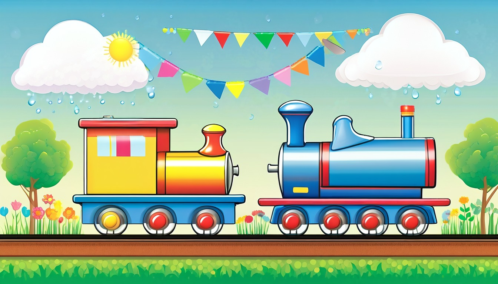

Sixteen paper cards help writers retell one invented story moment from a different storyteller view.
Audience: Families, homeschool groups, tutors, and adult-led writing tables for writers ages 7-11.
Format: 16 printable point-of-view cards plus adult guide tools, POV routines, take-home POV slips, and optional share prompts
Family-safe printable writing pages for adult-led, offline story practice.
$45
Included
16 printable kitchen-window point-of-view cards
Adult setup guide
Fictional viewpoint safety notes
Same-scene retell coaching moves
Privacy and family handoff notes
Pack reset notes
Six adult-led POV routines
Ten take-home POV slips
Eight optional share prompts
Provider-ready PDF and ZIP artifact
Adult guide
Viewpoint coaching
Before the session
Print the point-of-view cards, paper frame mats, narrator tabs, thought bubbles, and take-away slips before writers arrive.
Say clearly that kitchen window means a pretend paper frame, not anything writers inspect.
Choose invented role labels such as Teller, Watcher, Helper, Clerk, Keeper, or Object Voice.
Set pencils, blank strips, and extra narrator tabs where the adult can pass them out quickly.
Model one tiny scene twice: first with I noticed, then with the Watcher noticed.
Paper point-of-view setup
Place one kitchen-window frame mat in the center of the table as the shared pretend scene space.
Put first person, third person, observer, object voice, and closing tabs in separate paper stacks.
Use broad fictional scene words only, such as button tray, cloud cart, ribbon rail, moon bowl, and paper pantry.
Keep near-detail and far-detail boxes side by side so writers can sort what the narrator notices.
Leave a quiet swap pile for ideas that are fun but do not fit the current viewpoint.
Story viewpoint coaching
Ask who is telling this part before any sentence is written.
For first person, point to I, my, and me words and keep the sentence inside that narrator's view.
For third person, use the role label and describe what the narrator can notice from the paper scene.
Use thought bubbles for invented clues only, never personal details from a writer's life.
Read the sentence once and ask what changed when the viewpoint changed.
Privacy and safety notes
Keep every activity adult-led, fictional, and on paper.
Use invented names, role labels, paper props, and made-up scene words.
Do not ask writers to identify real people, ordinary places, or personal routines.
Turn any personal detail into a pretend prop, role, color, or paper scene clue before writing.
Skip any card that stops feeling gentle, fictional, or paper-only.
Family handoff
Send one slip with a family adult, not a full packet.
Tell family adults the slip is for one short fictional viewpoint sentence on paper.
Invite the adult to choose a narrator tab before the writer fills the blank.
Praise clear narrator choice, detail focus, and voice fit before spelling cleanup.
Return unused slips to the folder so the next adult-led table starts with clean paper.
Reset
Sort narrator tabs, paper frame mats, thought bubbles, detail boxes, and slips into separate stacks.
Recycle scrap warm-ups and keep clean blanks for the next session.
Clear model sentences from the table so the next group starts with fresh invented choices.
Put pencils, guide sheets, and all paper pieces back in the envelope.
Use one paper POV card at a time. Keep every choice broad, invented, and screen-free.
World menu
Sixteen POV-card worlds
Pick a world image, then write one fictional viewpoint sentence and one same-scene retell.
Ages 6-8
Moon Muffin Market
Ages 6-8
Puddle Planet Post Office
Ages 7-9
Buttonwood Library Train
Ages 7-9
Button Bakery Map Mix-Up
Ages 7-8
Teacup Town Weather Window
Ages 7-9
Pocket Park Notice Board
Ages 7-9
Spoon Ferry Lunchbox Harbor
Ages 7-9
Acorn Avenue Errand Office
Ages 8-10
Seed Library Map Room

Ages 8-10
Rain Gauge Railway
Ages 8-10
Moss Message Observatory
Ages 8-10
Tidepool Timekeepers Lab
Ages 10-11
Revision River Ferry
Ages 10-11
Clue Label Tower Museum
Ages 10-11
Compass Craft Academy
Ages 10-11
Binding Day Boardwalk
POV routines
Choose the paper viewpoint rhythm
I-View Paper Frame
Helping writers try first person without a long draft.
Adult places the paper frame mat and one narrator tab marked I.
Writer chooses one invented role to speak from inside the pretend scene.
Writer fills one line beginning with I notice or I wonder.
Adult asks which detail only that narrator would care about.
Third Person Watcher
Switching from I to a narrator who describes a character.
Adult replaces the I tab with a role label such as the Watcher.
Writer names one action the role can notice in the paper frame.
Writer writes one sentence using the role label instead of I.
Adult circles the words that show the narrator is not speaking as the character.
Near Far Detail Sort
Separating tiny clues from wider scene clues.
Adult draws two boxes labeled near detail and far detail.
Writer chooses two invented scene clues from the paper word stack.
Writer places the closer-feeling clue in near and the wider clue in far.
Writer writes one sentence that uses the chosen detail on purpose.
Thought Bubble Clue
Adding what a narrator thinks without adding personal details.
Adult gives one thought bubble and one role tab.
Writer chooses a pretend question the narrator is silently wondering.
Writer writes the thought clue in the bubble, then adds one action sentence.
Adult asks whether the thought helps the reader understand the scene.
Object Voice Switch
Trying the same scene from a pretend object's viewpoint.
Adult chooses a harmless paper object card, such as spoon, ribbon, button, or label.
Writer gives the object one tiny job in the pretend scene.
Writer writes one line as if the object could tell the moment.
Adult helps revise one word so the object voice sounds different from a person.
Closing View Choice
Ending a small scene from the clearest viewpoint.
Adult lays out two narrator tabs from earlier work.
Writer rereads one sentence from each viewpoint.
Writer chooses the viewpoint that makes the ending clearest.
Writer writes one final line that shows what the narrator notices last.
Take-home POV slips
Finish one story point-of-view later
view slip | first person view
I Notice Frame
Write one sentence from an invented narrator using I: ____________________.
Adult asks what this narrator notices first: ____________________.
observer slip | third person view
Watcher Tells It
Rewrite the line using a pretend role label instead of I: ____________________.
Adult asks which words show the narrator is watching: ____________________.
near-detail slip | near detail
Close Clue Box
Name one tiny detail in the paper frame and use it in a sentence: ____________________.
Adult asks why that near detail matters to the narrator: ____________________.
far-detail slip | far detail
Far Ribbon View
Choose one wider pretend scene detail and write what it changes: ____________________.
Adult asks how the far detail changes the view: ____________________.
thought slip | thought clue
Thought Bubble Wonder
Write one invented thought the narrator keeps in a thought bubble: ____________________.
Adult asks what clue the thought gives the reader: ____________________.
voice slip | voice filter
Voice Filter Tab
Pick careful, bouncy, puzzled, or proud, then write one line in that voice: ____________________.
Adult asks which word made the voice clear: ____________________.
object-view slip | object viewpoint
Button Tray View
Let a pretend object tell one moment from the paper scene: ____________________.
Adult asks what the object noticed that a person might miss: ____________________.
setting-lens slip | setting lens
Paper Pantry Lens
Use the setting lens to describe the paper pantry, moon bowl, or ribbon rail: ____________________.
Adult asks which setting clue changes the story feeling: ____________________.
emotion-lens slip | emotion lens
Mood Tint Lens
Choose calm, curious, worried, or pleased and tint one sentence with that feeling: ____________________.
Adult asks which detail shows the feeling without naming it: ____________________.
closing-view slip | closing viewpoint
Closing View Line
Finish the invented scene from the narrator who sees the best final clue: ____________________.
Adult asks why this viewpoint makes a good closing line: ____________________.
Optional share prompts
My narrator tab was ____________________.
The first person line I liked was ____________________.
The third person version said ____________________.
The near detail I circled was ____________________.
The far detail I used was ____________________.
My thought bubble clue was ____________________.
The object viewpoint line was ____________________.
The closing viewpoint I chose was ____________________.
POV Card 1 | Ages 6-8 | first person view
Moon Muffin Market Peep
Moon Muffin Market
Adult setup: Adult: name one make-believe market role, then invite the writer to speak as that role on paper: ____________________.
With your adult, write what your moon-market narrator says first: ____________________.
First view
First view: I am the ____________________, and I notice a tray of glowing muffins because...
Second view
Second view: Now let a friendly booth helper tell the same moment; helper name: ____________________.
Near detail
Near detail: Add one close paper-scene detail your narrator can almost touch: ____________________.
Far detail
Far detail: Add one far paper-scene detail near the moon arch or muffin signs: ____________________.
Thought clue
Thought clue: What does the narrator hope will happen with the next muffin? ____________________.
Revise view
Revise view: Change one sentence so it sounds more like your narrator, not you: ____________________.
Quiet option
Quiet option: Point to a role picture, then copy one viewpoint sentence: ____________________.
Carry-away line: Try one more I-tell-it sentence for a new moon snack: ____________________.
POV Card 2 | Ages 6-8 | object viewpoint
Splash Stamp Sorter
Puddle Planet Post Office
Adult setup: Adult: choose a paper-world item such as a stamp, satchel, puddle label, or wobble cart: ____________________.
With your adult, write as the chosen object and tell what it notices: ____________________.
First view
First view: I am the ____________________, waiting at the Puddle Planet mail counter.
Second view
Second view: A puddle clerk sees me and thinks I look like ____________________.
Near detail
Near detail: What small splash, fold, or shine is beside the object? ____________________.
Far detail
Far detail: What can the object see across the pretend sorting room? ____________________.
Thought clue
Thought clue: What does the object secretly want before the mail cart rolls away? ____________________.
Revise view
Revise view: Rewrite one line so the object sounds tiny, brave, or puzzled: ____________________.
Quiet option
Quiet option: Adult points to one object word; writer adds one noticing word: ____________________.
Carry-away line: Tell one more paper scene from a pretend object view: ____________________.
POV Card 3 | Ages 7-9 | far detail
Buttonwood Lantern Car
Buttonwood Library Train
Adult setup: Adult: ask the writer to mark one close shelf detail and one distant pretend-scene feature: ____________________.
With your adult, start near the library train, then pull the story view toward the far end: ____________________.
First view
First view: Describe the lantern car from a reader helper's view: ____________________.
Second view
Second view: Describe the same car from a tiny acorn passenger's view: ____________________.
Near detail
Near detail: Name a close detail on a seat, shelf, ticket, or lantern: ____________________.
Far detail
Far detail: Name something far away in the make-believe rail hall: ____________________.
Thought clue
Thought clue: What does the passenger wonder when the library train hums? ____________________.
Revise view
Revise view: Add one far detail that changes the mood of the scene: ____________________.
Quiet option
Quiet option: Adult chooses near or far; writer fills one line: ____________________.
Carry-away line: Reuse near-to-far writing on another imaginary ride: ____________________.
POV Card 4 | Ages 7-9 | same scene new view
Crumb Map Switcheroo
Button Bakery Map Mix-Up
Adult setup: Adult: choose two fictional role labels, such as button baker and map mender: ____________________.
With your adult, write the mix-up once, then write it again with a new storyteller: ____________________.
First view
First view: The button baker thinks the map crumb means ____________________.
Second view
Second view: The map mender sees the same crumb and thinks ____________________.
Near detail
Near detail: Add one close bakery detail beside the paper map: ____________________.
Far detail
Far detail: Add one far scene detail that both storytellers notice differently: ____________________.
Thought clue
Thought clue: What secret worry does the first storyteller keep tucked away? ____________________.
Revise view
Revise view: Circle one sentence and rewrite it for the second storyteller's voice: ____________________.
Quiet option
Quiet option: Choose only one sentence to switch viewpoints: ____________________.
Carry-away line: Try a new view switch with a pretend lost recipe card: ____________________.
POV Card 5 | Ages 7-8 | setting lens
Teacup Weather Pane
Teacup Town Weather Window
Adult setup: Adult: pick one make-believe weather mood, then keep all writing on the page: ____________________.
With your adult, let the scene describe what changes when the weather shifts: ____________________.
First view
First view: The teacup town feels ____________________ when the cloud ribbons drift by.
Second view
Second view: Tell the same weather moment as if the town feels the opposite: ____________________.
Near detail
Near detail: Add one close teacup detail, like a saucer step or spoon bridge: ____________________.
Far detail
Far detail: Add one far make-believe weather detail above the little skyline: ____________________.
Thought clue
Thought clue: If the setting could think, what would it wish for the teacup people? ____________________.
Revise view
Revise view: Replace a plain setting word with a stronger setting lens word: ____________________.
Quiet option
Quiet option: Adult names a weather mood; writer adds one setting detail: ____________________.
Carry-away line: Use a setting lens for another tiny pretend town: ____________________.
POV Card 6 | Ages 7-9 | thought clue
Pocket Park Notice Flutter
Pocket Park Notice Board
Adult setup: Adult: choose one fictional notice-board role, then ask what that role knows but has not said: ____________________.
With your adult, write one action, then add a thought clue that changes how we read it: ____________________.
First view
First view: A pocket-park keeper pins a tiny note that says ____________________.
Second view
Second view: A paper leaf watches the note and notices ____________________.
Near detail
Near detail: Add one close detail near the notice board, such as a round tack or ribbon tab: ____________________.
Far detail
Far detail: Add one far pretend park detail that makes the notice feel important: ____________________.
Thought clue
Thought clue: What is the keeper thinking but not saying yet? ____________________.
Revise view
Revise view: Rewrite one action so the hidden thought is easier to guess: ____________________.
Quiet option
Quiet option: Adult reads the action; writer adds one quiet thought word: ____________________.
Carry-away line: Add one thought clue to any pretend notice scene on paper: ____________________.
POV Card 7 | Ages 7-9 | object viewpoint
Spoon Ferry Sees the Harbor
Spoon Ferry Lunchbox Harbor
Adult setup: Adult: place the spoon ferry, lunchbox dock, crumb waves, and napkin flag paper pieces in the pretend frame; choose the object narrator: ____________________.
With the adult, work offline on this paper card. Pretend the spoon ferry is telling the scene and write what it notices first: ____________________.
First view
First view: I am the spoon ferry, and the lunchbox harbor appears like ____________________.
Second view
Second view: A snack-barge helper sees the same harbor and notices ____________________.
Near detail
Near detail: Close to the ferry, I can see ____________________.
Far detail
Far detail: Across the paper harbor, I can see ____________________.
Thought clue
Thought clue: The spoon ferry thinks, If I glide carefully, ____________________.
Revise view
Revise view: Change 'The ferry moved' so the spoon ferry tells it: ____________________.
Quiet option
Quiet option: circle one paper harbor item and finish one object-view sentence: ____________________.
Carry-away line: try the object view again with a new pretend lunchbox cargo: ____________________.
POV Card 8 | Ages 7-9 | same scene new view
Acorn Cart From Two Desks
Acorn Avenue Errand Office
Adult setup: Adult: set down the acorn cart, button counter, leaf stamp desk, and paper path slip; choose two helper roles: ____________________.
With the adult, work offline on this paper card. Tell the acorn mix-up twice, once from each helper's view: ____________________.
First view
First view: The Button Counter Helper thinks the acorn cart matters because ____________________.
Second view
Second view: The Leaf Stamp Helper tells the same moment and notices ____________________.
Near detail
Near detail: On the desk nearest the acorn cart, one clue is ____________________.
Far detail
Far detail: At the far paper shelf, another helper can see ____________________.
Thought clue
Thought clue: One helper keeps thinking, The best next stop is ____________________.
Revise view
Revise view: Change 'The cart was confusing' into a view from one helper: ____________________.
Quiet option
Quiet option: point to one helper role and write only that helper's view sentence: ____________________.
Carry-away line: retell the same errand scene from a new pretend desk: ____________________.
POV Card 9 | Ages 8-10 | setting lens
Map Room Through Seed Shelves
Seed Library Map Room
Adult setup: Adult: arrange seed packet drawers, a folded garden map, blank path cards, and a small table label; choose the setting lens: ____________________.
With the adult, work offline on this paper card. Choose Map Keeper, Seed Shelf Guide, or Path Card, then write what the room makes that narrator notice: ____________________.
First view
First view: From the map table, the most important clue is ____________________.
Second view
Second view: From the seed shelf, the same clue appears as ____________________.
Near detail
Near detail: Beside the folded map, I notice ____________________.
Far detail
Far detail: At the far side of the packet drawers, I notice ____________________.
Thought clue
Thought clue: The narrator wonders whether the missing path means ____________________.
Revise view
Revise view: Change 'The room had seeds' into a setting-lens sentence with one map-room clue: ____________________.
Quiet option
Quiet option: choose one seed packet shape and write a setting-lens phrase beside it: ____________________.
Carry-away line: use the same map-room setting with a new narrator role: ____________________.
POV Card 10 | Ages 8-10 | near detail
Gauge Tube Close-Up Train
Rain Gauge Railway
Adult setup: Adult: place the clear gauge tube, bead cards, shiny rail strip, and tiny train piece in the pretend kitchen-window frame; choose the close clue: ____________________.
With the adult, work offline on this paper card. Begin beside the gauge tube, then widen the view in one sentence: ____________________.
First view
First view: The Gauge Checker sees the railway from beside the measuring tube and notices ____________________.
Second view
Second view: The Train Conductor sees the same scene from the cab and notices ____________________.
Near detail
Near detail: At the tube edge, one tiny clue is ____________________.
Far detail
Far detail: Along the far rail strip, the larger pattern is ____________________.
Thought clue
Thought clue: The Gauge Checker suspects the clue means ____________________.
Revise view
Revise view: Change 'It was rainy' into a close-detail sentence about one object: ____________________.
Quiet option
Quiet option: point to the tube, bead card, or rail strip and write one close-detail phrase: ____________________.
Carry-away line: make a second railway view that begins with one tiny gauge clue: ____________________.
POV Card 11 | Ages 8-10 | thought clue
Moss Signal Mind Glow
Moss Message Observatory
Adult setup: Adult: place moss tile cards, a dome chart, signal shapes, and two narrator labels; choose the hidden thought clue: ____________________.
With the adult, work offline on this paper card. Write what the observer sees, then add one thought that hints at what they believe: ____________________.
First view
First view: The Dome Observer sees the moss signal as ____________________.
Second view
Second view: The Note Keeper sees the same signal as ____________________.
Near detail
Near detail: Beside the glowing moss tile, one small sign is ____________________.
Far detail
Far detail: Across the pretend dome chart, another sign is ____________________.
Thought clue
Thought clue: The observer does not say the answer yet, but thinks ____________________.
Revise view
Revise view: Change 'The observer was worried' into a thought clue that shows the feeling: ____________________.
Quiet option
Quiet option: choose a glow, blink, or hush card and write one quiet thought on paper: ____________________.
Carry-away line: retell the observatory moment with one new thought clue: ____________________.
POV Card 12 | Ages 8-10 | object viewpoint
Shell Clock Paper Frame
Tidepool Timekeepers Lab
Adult setup: Print the card, fold one paper frame, and choose a pretend lab object that gets to narrate: ____________________.
On paper, write what the shell clock notices before the lab helpers do: ____________________.
First view
First view: The shell clock says, I notice ____________________.
Second view
Second view: The tide chart apprentice says, I notice ____________________.
Near detail
Near detail: Name one small mark beside the shell clock: ____________________.
Far detail
Far detail: Name one pretend lab station across the page: ____________________.
Thought clue
Thought clue: What does the shell clock wonder about the changing water line? ____________________.
Revise view
Revise view: Change one sentence so it sounds more like a careful object narrator: ____________________.
Quiet option
Quiet option: Draw the shell clock first, then add one I notice line: ____________________.
Carry-away line: Use another paper object to narrate a tiny lab moment: ____________________.
POV Card 13 | Ages 10-11 | same scene new view
Ferry Dock Double View
Revision River Ferry
Adult setup: Print the card, draw two paper docks, and choose one draft crossing for both roles: ____________________.
Write the scene once from the ferry guide's view, then again from the draft page's view: ____________________.
First view
First view: The ferry guide sees the confusing sentence as ____________________.
Second view
Second view: The draft page sees the same crossing as ____________________.
Near detail
Near detail: Add one close paper ferry item, such as a pencil oar or note buoy: ____________________.
Far detail
Far detail: Add one far draft island detail that changes the mood: ____________________.
Thought clue
Thought clue: What does the draft page hope will happen after the crossing? ____________________.
Revise view
Revise view: Keep the same event, but change whose eyes guide the sentence: ____________________.
Quiet option
Quiet option: Circle one role and write only that role's view: ____________________.
Carry-away line: Fold a paper ferry and retell one scene from a new view: ____________________.
POV Card 14 | Ages 10-11 | observer detail
Tower Label Watcher
Clue Label Tower Museum
Adult setup: Print the card, stack three blank paper labels, and invent one exhibit from ordinary pretend shapes: ____________________.
Write as a quiet observer who notices one clue without explaining everything at once: ____________________.
First view
First view: The label keeper notices ____________________ before any other clue.
Second view
Second view: The tower visitor notices ____________________ instead.
Near detail
Near detail: Add one close label edge, smudge, color mark, or folded corner: ____________________.
Far detail
Far detail: Add one high shelf, spiral step, or case shape across the page: ____________________.
Thought clue
Thought clue: What does the observer suspect the label is hiding? ____________________.
Revise view
Revise view: Remove one distracting detail and keep the clue the observer truly needs: ____________________.
Quiet option
Quiet option: Mark only the clue the observer sees first: ____________________.
Carry-away line: Make one paper label and write what a careful observer notices: ____________________.
POV Card 15 | Ages 10-11 | setting lens
Compass Mat Room Lens
Compass Craft Academy
Adult setup: Print the card, sketch a compass mat and two path tiles, and pick the part of the room that shapes the scene: ____________________.
Start with the place, then show how the compass apprentice acts inside that paper scene: ____________________.
First view
First view: Through the setting lens, the map table makes the apprentice notice ____________________.
Second view
Second view: Through the apprentice's view, the map table feels like ____________________.
Near detail
Near detail: Add one close tool on the compass mat: ____________________.
Far detail
Far detail: Add one far wall chart, thread rack, or path shelf on the paper scene: ____________________.
Thought clue
Thought clue: What choice does the apprentice think the setting is asking for? ____________________.
Revise view
Revise view: Move one setting detail earlier so it guides the action: ____________________.
Quiet option
Quiet option: Label the setting first, then write one action beside it: ____________________.
Carry-away line: Draw a tiny compass mat and write how the place changes a choice: ____________________.
POV Card 16 | Ages 10-11 | closing viewpoint
Ribbon Booklet Final View
Binding Day Boardwalk
Adult setup: Print the card, fold three pretend pages, and choose who gets the last view of the booklet: ____________________.
Write the ending from the role that can show the booklet is complete: ____________________.
First view
First view: The page binder sees the final booklet as ____________________.
Second view
Second view: The ribbon keeper sees the same booklet as ____________________.
Near detail
Near detail: Add one close paper fold, ribbon loop, or cover mark: ____________________.
Far detail
Far detail: Add one boardwalk table or display stand on the pretend page: ____________________.
Thought clue
Thought clue: What does the final viewer understand about what has changed? ____________________.
Revise view
Revise view: Choose the view that gives the clearest ending and cross out the weaker one: ____________________.
Quiet option
Quiet option: Box the final-view sentence before adding any other detail: ____________________.
Carry-away line: Fold a paper booklet and write one closing view for its last page: ____________________.